(Cat-B / RICS / FIG / IHO / ICA / AMSISL)
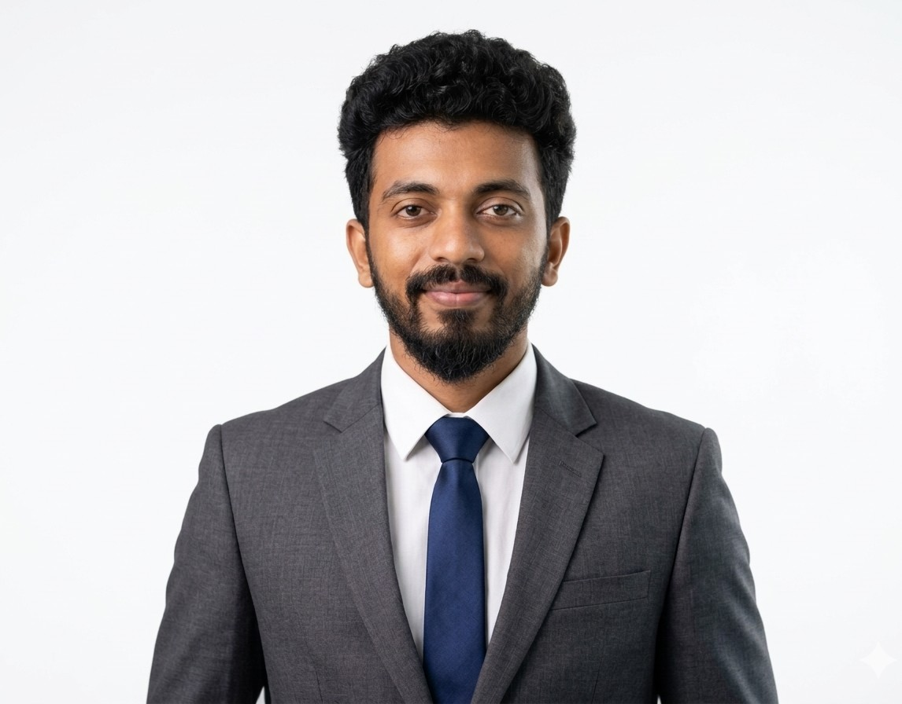
Results-driven Hydrographic Survey Engineer with over 6 years of experience in offshore, port construction, dredging and marine geophysical surveys across Saudi Arabia and Sri Lanka. Experienced in MBES, SBES, Side Scan Sonar, Sub-Bottom Profiling, GNSS positioning and barge positioning supporting subsea installation and marine construction projects. Skilled in survey mobilization, data acquisition, QA/QC, Data processing, and hydrographic reporting according to IHO standards.
Sabaragamuwa University of Sri Lanka
Specialized in advanced geospatial science, hydrographic surveying, marine data analysis, and spatial data modeling.
Focus areas include: hydrographic data processing, GIS applications, remote sensing, and marine surveying technologies.
Sabaragamuwa University of Sri Lanka
Comprehensive training in hydrographic surveying, offshore positioning systems, bathymetric data acquisition, and marine construction surveys.
Strong foundation in MBES, SBES, SSS, SBP, GNSS, and hydrographic data processing according to IHO standards.
British Way English Academy
Developed professional communication, technical reporting, and academic writing skills for international marine and offshore projects.
Open University of Sri Lanka
Training in Microsoft Office Suite, data handling, and fundamental IT skills supporting survey data processing and reporting.
Feb 2025 – Present
Leading offshore hydrographic and geophysical survey operations supporting marine construction, subsea engineering, and offshore positioning systems.
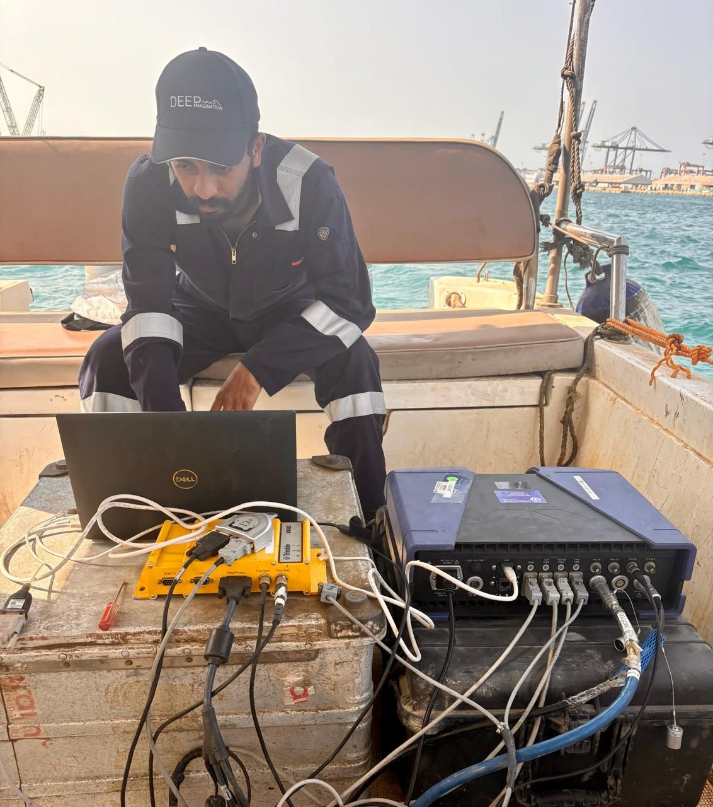
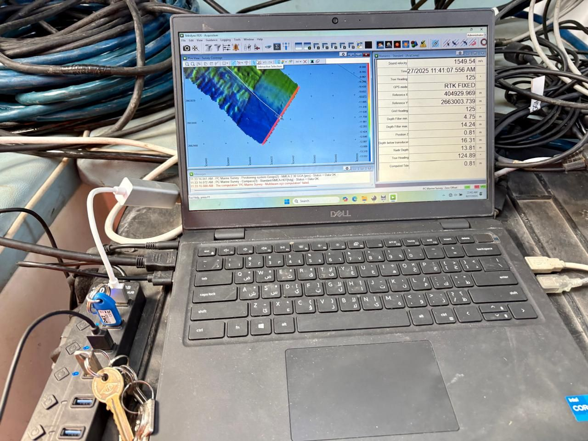
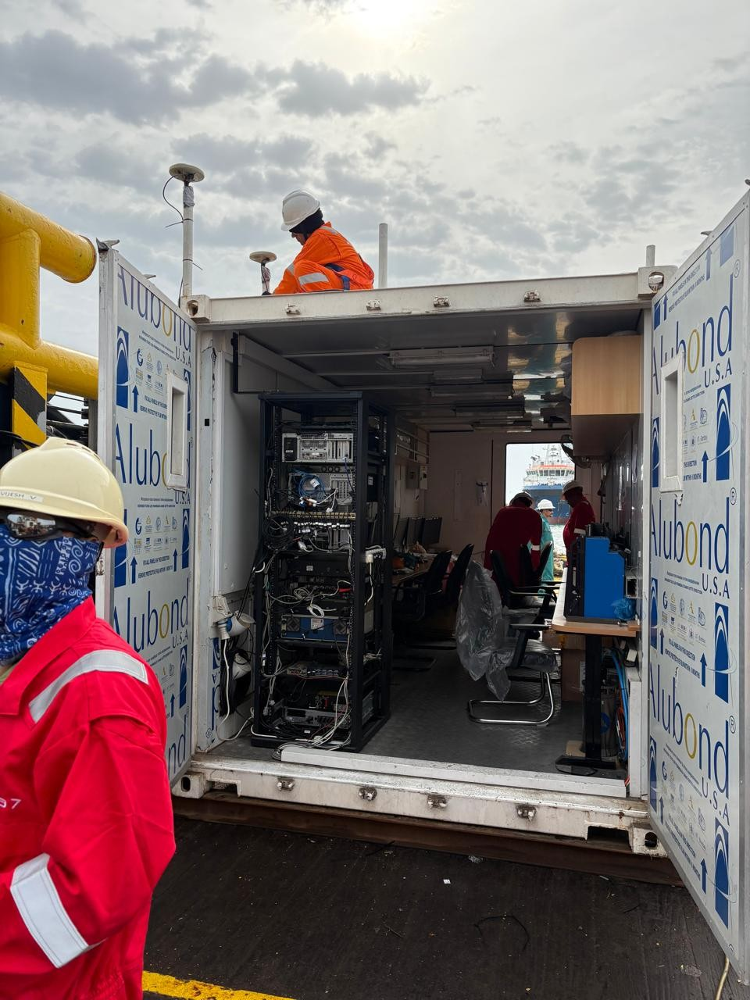
May 2023 – Jan 2025
Worked as Chief Hydrographic Surveyor on large-scale port construction projects, including the East Container Terminal, Colombo Harbour.
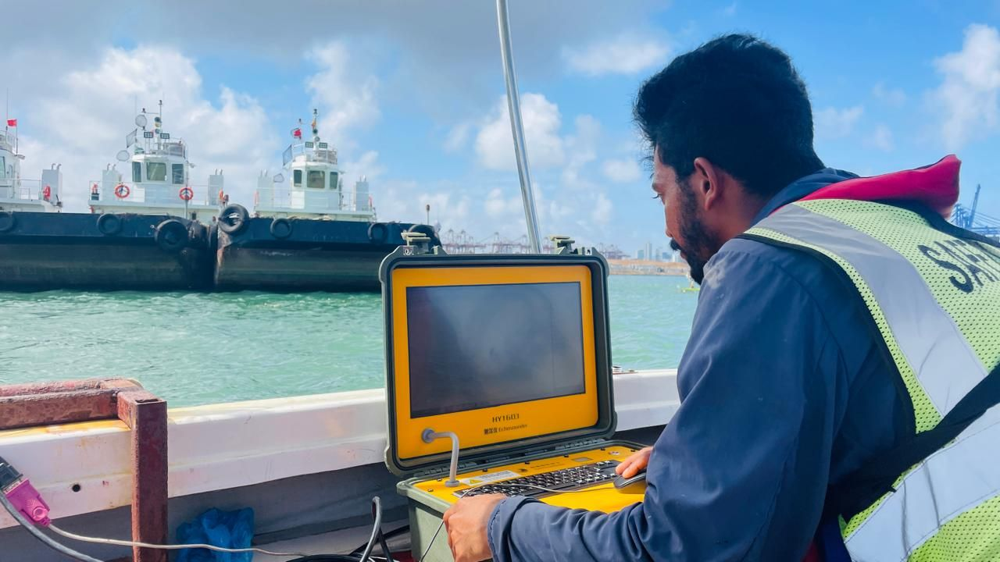
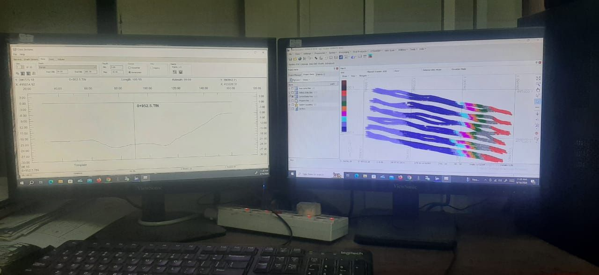
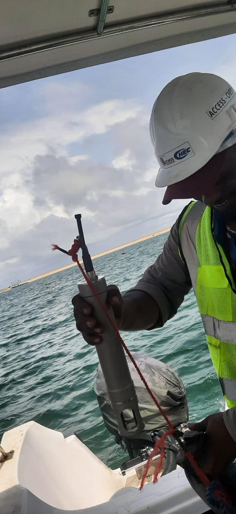
Aug 2022 – Apr 2023
Contributed to major dredging and port development projects including Hambantota International Harbour.
✔ Conducted offshore and onshore bathymetric surveys for navigational channel clearance.
✔ Performed Single Beam surveys for dredging monitoring (pre and post dredge).
✔ Utilized Side Scan Sonar for seabed visualization and obstruction detection.
✔ Carried out volume calculations for dredging verification and billing.
✔ Established GNSS control points and installed tide gauges.
✔ Performed QA/QC and prepared hydrographic reports.
Mar 2022 – Jun 2022
Supported national-level hydrographic and offshore survey projects in collaboration with government agencies and the Navy.
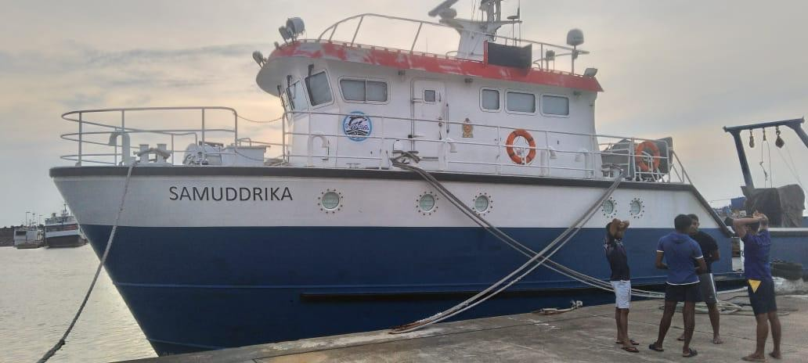
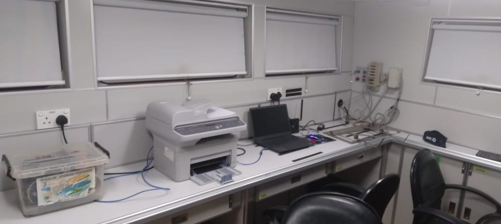
Mar 2019 – Jan 2022
Delivered hydrographic and geospatial survey solutions for irrigation, coastal, and environmental projects.
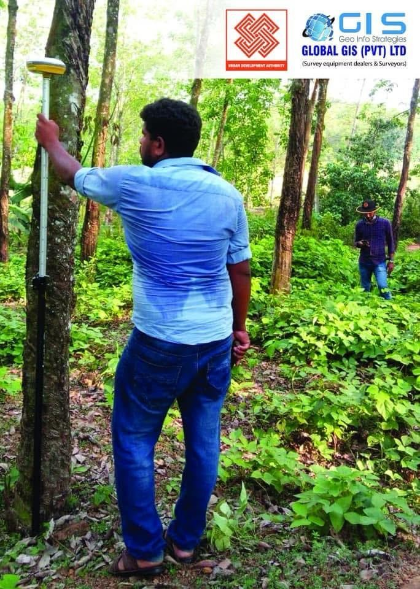
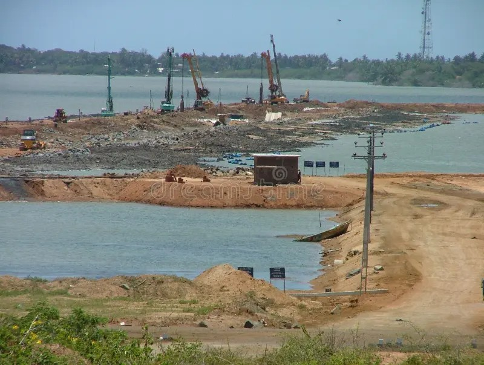
📧 Email: sajithmadushankageo@gmail.com
📞 Phone: +966 56 985 2850
🔗 LinkedIn: linkedin.com/in/sajith-madushanka